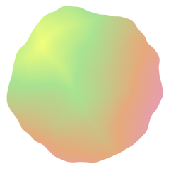
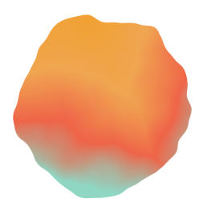
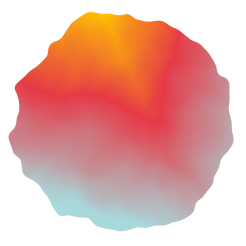

-
Ethiopia

エチオピア ゴゴグ ウォッシュト
Ethiopia Gogogu Washed
シトラス系や白ブドウのような爽やかな酸味
サトウキビのような甘い余韻が続いていく
エチオピアらしい繊細さと透明感が楽しめるCinnamon Roast（浅煎り）
-
Panama

パナマ ラ エスメラルダ ダイヤモンドマウンテン
カトゥアイ フリーウォッシュドPanama La Esmeralda Diamond Mountain Catuai Fully Washed
紅茶のような上品さと蜂蜜の円やかな甘さ
シトラス系の爽やかで軽やかな風味と
林檎や和梨を連想させる柔らかな甘さMedium Roast（中浅煎り）
-
Guatemala

グアテマラ アンティグア
ラ・フォリー農園 フリーウォッシュドGuatemala Antigua Finca La Folia Fully Washed
柑橘系のような爽やかな酸味と
ほのかに林檎のような優しい甘さ
マイルドな苦みと奥行のある爽やかな味わいの
バランスが心地良いHigh Roast（中深煎り）
-
RESTART BLEND
ニカラグア & ブラジル
Nicaragua & Brazil
ダークチョコレートのような
深みのあるコク
黒蜜のような香ばしい甘さHigh Roast（中深煎り）
MIND-BREWING
COFFEE
mind-blowing（衝撃的な）と、brewing（コーヒーの抽出）を合わせた店名。本物のコーヒーを初めて飲んだ、あのときの衝動を、あなたにも。